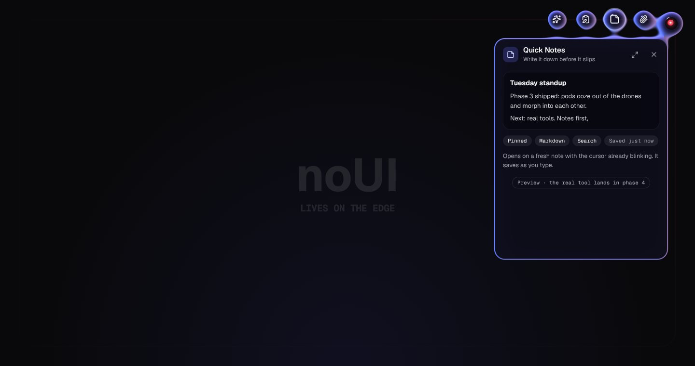

Web first · phases 0–3 done
The interface that
lives on the edge.
A living liquid eye rides a rail around the edge of your screen. Tap it and four drones flow out; tap a drone and a glass panel oozes out of it. Your own AI will sit behind the eye.

Not a video: this is the real engine, running in your browser. Tap the eye, drag it around the rail, fling it into a corner, or press and hold for the quick menu.
On the rail
It never covers your work. The eye glides along a rounded track just inside the screen edge. Drag it, fling it, and it settles into a corner.
Alive
It looks at your cursor, blinks, dozes off after thirty seconds and wakes when you come back. Its lids and colour tell you what it's doing.
Fluid
The eye, the drones and the panels are one body of glass goo. Drones flow out of the eye, panels ooze out of drones, and it all melts back when you're done.
Four drones
Small tools that follow the eye.
Tap the eye and four drones flow out along the rail like a train, joined by liquid necks. Tap a drone and a pod grows out of it. Tap another and the same pod morphs across. Close it and it melts back.
The panels are previews of what the tools will look like. The real tools arrive in phase 4.
The eye
One glance tells you what it's doing.
Where the pupil looks, how open the lid is, how often it blinks and what colour it glows all follow the eye's mood. Pick one, or just poke the real thing: the highlighted chip is whatever it's doing right now.
Idle
Calm glances around the room, slow blinks, sometimes a double blink. A cyan pupil.
Still to come with the AI: Thinking Speaking
Feel
Physical, not animated.
Motion runs on fixed 120 Hz springs, so it feels the same on a 60 Hz laptop and a 144 Hz monitor. The eye lives on the rail and can't fall off, and corners glide instead of kinking. Try the presets, then grab the eye and fling it.
Feel
Look
Colours
Try
Themes, colours and feel are all settings in the app. There is also a Transparent theme for the native overlay, which needs a desktop to show off.
The quick menu: Ask AI (greyed out until phase 5), release or recall the drones, lock, hide for an hour, and Settings in the app.
Keyboard & access
Everything works without a mouse.
Press Tab in any demo above to land on the eye, then try these.
- Enter Space
- Release or recall the drones
- ← ↑ → ↓
- Move along the rail, the way you press
- Shift + arrow
- Jump to the next corner
- 1 – 4
- Open that drone's panel
- L
- Lock or unlock
- M Shift + F10
- Quick menu
- Ctrl + Enter
- Make the open panel larger or smaller
- Esc
- Close the panel, then recall the drones
- The eye and the drones are real buttons with labels. The eye's label says what state it is in.
- Drones only take Tab focus while they're out.
- Panels are dialogs: focus moves in, Tab stays inside, and Esc hands focus back to the drone.
- The quick menu is a real menu: arrows to move, Enter to choose, Esc to close.
- Reduced motion switches off bounce, breathing and splashes, whether your system asks for it or you turn it on in settings.
- Panels are opaque enough to read on any background, even where blur isn't available.
AI · phase 5, upcoming
The eye is the AI.
Bring your own brain.
The model is yours. Point noUI at any OpenAI-compatible endpoint: one running on your own machine, or a hosted API you already use. Your key and your data stay on your device. "Ask AI" is already in the quick menu, greyed out until this lands.
- A custom endpoint first: anything that speaks
/v1/chat/completions - Streaming answers you can abort at any time
- Context chips: notes, clipboard text, attachments
- A thinking eye and a speaking eye
Aimed at
Where it runs
Web first. Native next.
Web app
FirstRuns in any modern browser, the same code you just played with. An installable, offline-ready app is phase 7.
Windows
LaterA transparent, always-on-top overlay. Global hotkey, clipboard history, screenshots straight into Attach.
Android
LaterA floating bubble over other apps, riding the edge of your phone. Share-sheet into Attach.
Roadmap
From rewrite to daily tool.
Follow the eye.
noUI is being rebuilt. Builds are published on the public releases repository: the web app first, then Windows and Android.
No public build yet
The rewrite is under way. The first web build arrives with v0.1.